Руководство пользователя Руководство пользователя
Руководство пользователя Руководство пользователяВ данном руководстве будут описываться шаги по правильному импорту данных ПЦР-маркеров, в базу данных Mlab с помощью программы MlabReporter. Общая последовательность действий следующая:
Чтобы импортировать данные нам нужно сделать файл CSV с особой структурой. Пример такого файла в Excel выглядит так:
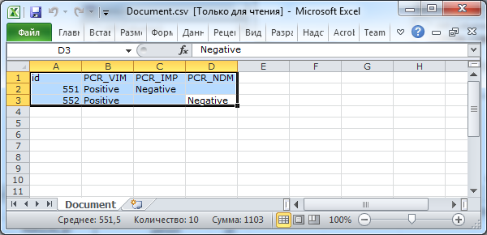
Если его открыть в Блокноте, он будет выглядеть так:
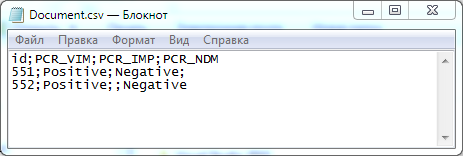
Примечание: Пример файла для заполнения можно получить из программы MlabReporter, нажав на кнопку Получить пример файла.
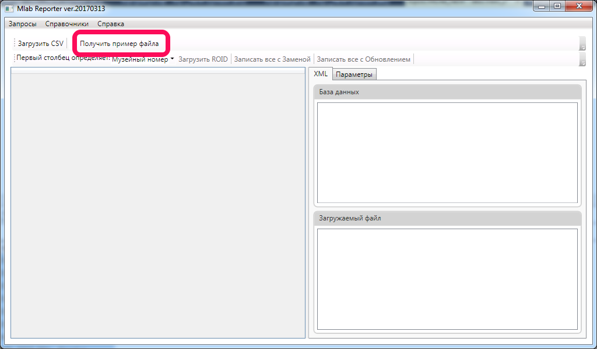
Первый столбец должен всегда определяет идентификатор штамма к которому будут относиться эти параметры. Идентификатором может выступать Номер НИИАХ, Музейный номер, ROID. Рекомендуется называть первый столбец согласно тому, что он содержит, чтобы потом не было путаницы.
Одна строка - один штамм.
После идентификатора идут столбцы с параметрами. Количество параметров может быть произвольным, как и их порядок. Но крайне рекомендуется, чтобы названия этих параметров были стандартизированы. На данный момент в Mlab используются следующие параметры:
На пересечении строк и столбцов должны стоять значения этих параметров. Допустимые значения представлены в таблице ниже:
Лишних строк и столбцов быть не должно.
Перед и после значений параметров не должно быть лишних пробелов.
Файл CSV должен быть сохранен в кодировке Windows 1251, разделители полей - точка с запятой.
Примечание: Формат хранения данных ПЦР-маркеров по сути является простым текстом. Поэтому очень важно, чтобы соблюдалось единообразие при заполнении. Старайтесь использовать только те значения, которые указаны выше. Помните - программа запишет ровно то, что ей сказали.
Сделаем в Excel нужную нам табличку.
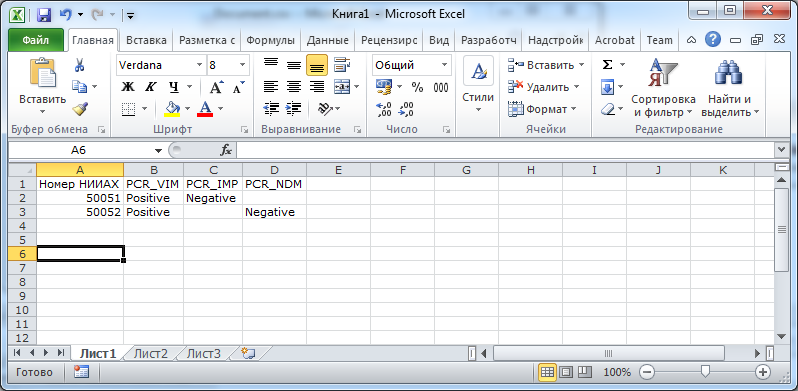
На всякий случай сделаем замены для вероятных positive и negative на Positive и Negative соответственно. (Комбинация клавиш Ctrl+H)
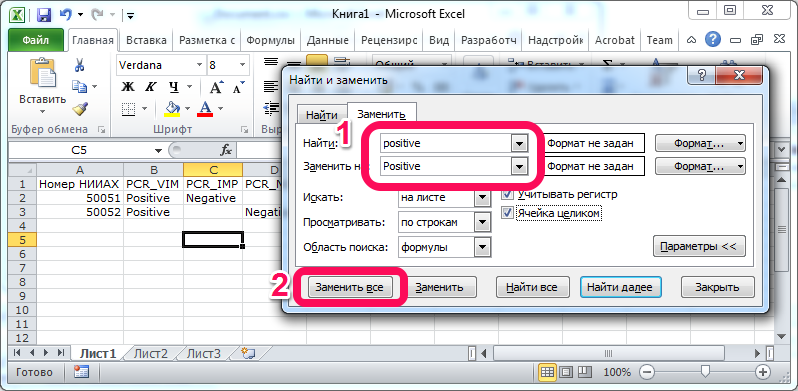
На всякий случай удалим лишние столбцы
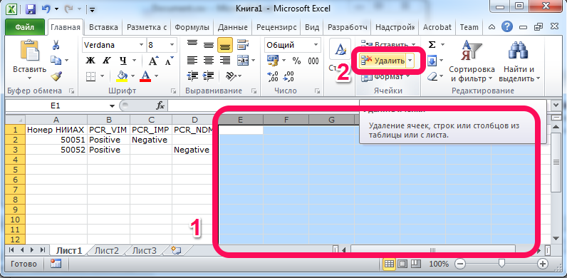
На всякий случай удалим лишние строки
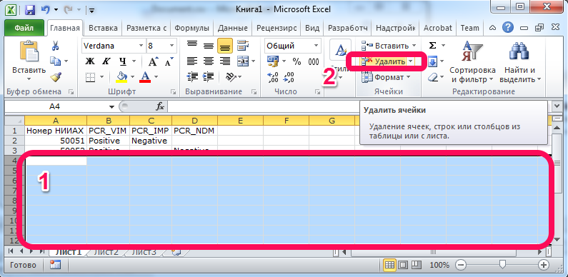
Теперь можно сохранить файл в формате CSV. Для этого выбираем Файл - Сохранить как и в поле Тип файла выбираем CSV (разделители - запятые).
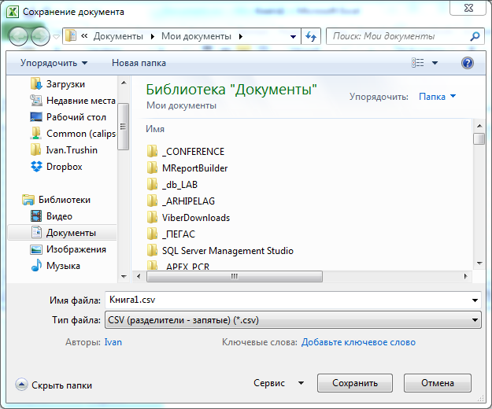
Появится сообщение В файле выбранного типа может быть сохранен только текущий лист, нажимаем ОК.
Потом появится сообщение Файл может содержать возможности, несовместимые с форматом CSV (разделители запятые). Сохранить книгу в этом формате?, нажимаем Да.
После этого закрываем Excel и на вопрос Сохранить изменения в файле нажимаем Не сохранять.
ТО ЭТО НЕПРАВИЛЬНО И НУЖНО УДАЛИТЬ ЛИШНИЕ СТРОКИ/СТОЛБЦЫ
Для импорта файла ПЦР-маркеров используется программа MlabReporter. Окно импорта выглядит следующим образом:
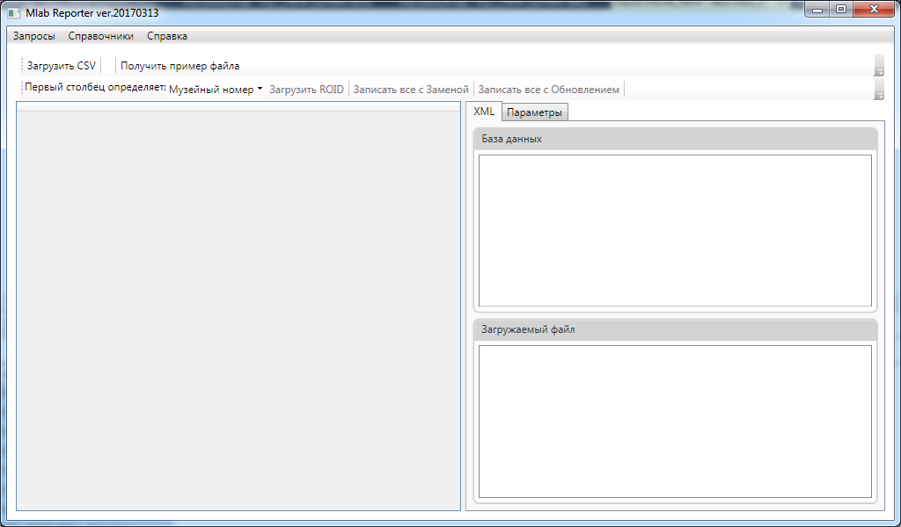
Общий порядок действий по импорту выглядит следующим образом:
Загружаем файл в программу. Для этого нажимаем кнопку Загрузить CSV. Если файл был сформирован правильно, то после окончания закрузки окно программы будет выглядеть следующим образом:
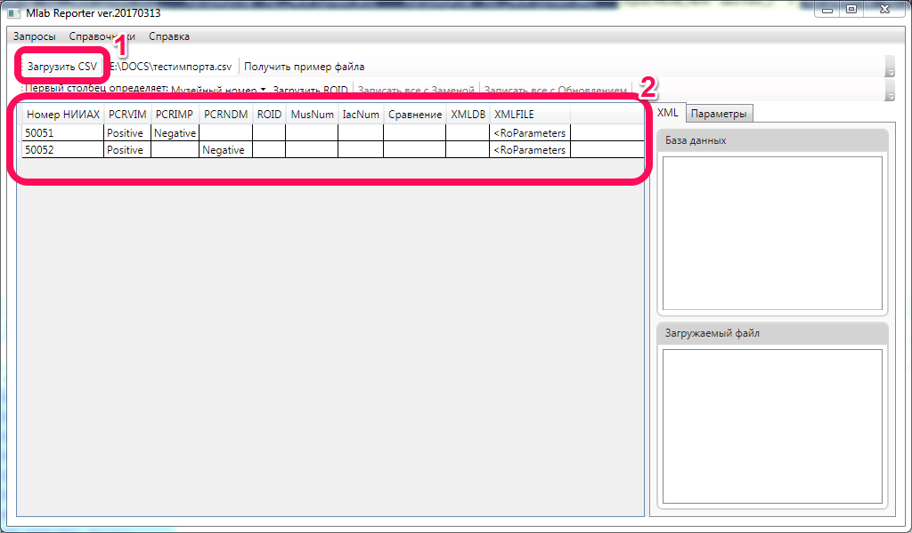
Если после загрузки программы таблица выглядит так:
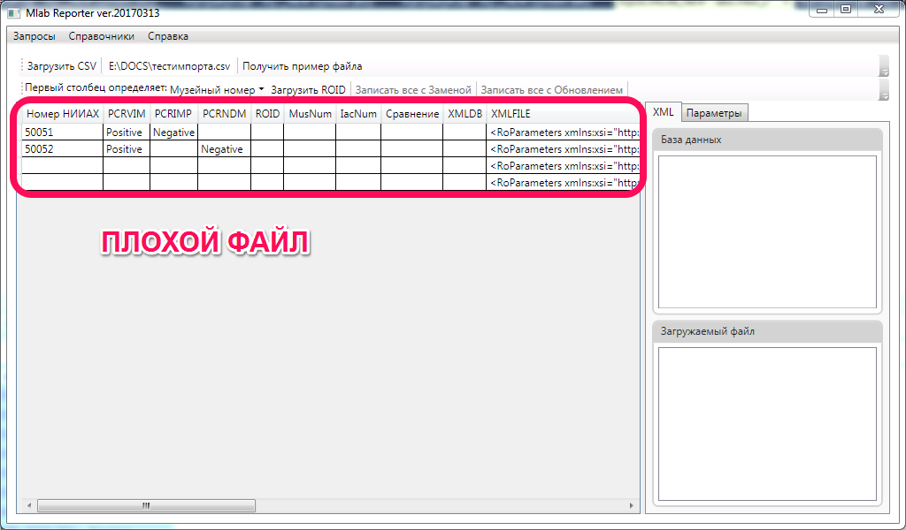
или вот так:
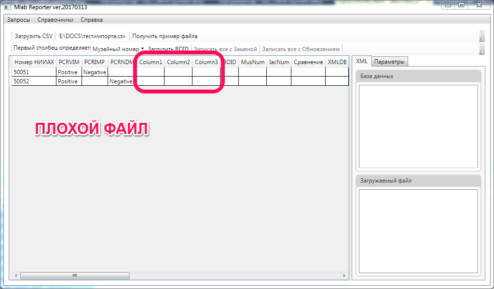
или даже так:
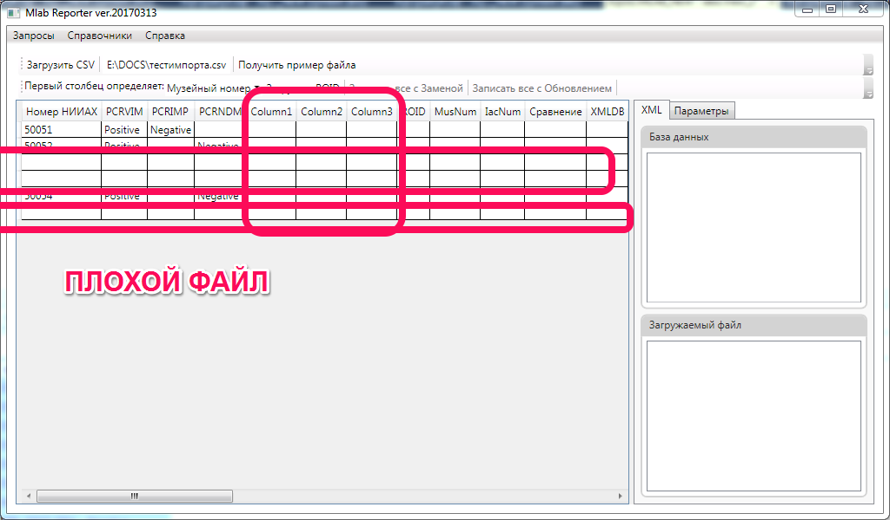
то значит, что файл был сформирован неправильно и его нужно переделать.
Теперь нужно, чтобы программа нашла интересующие нас штаммы в базе данных. Для этого мы выставляем в выпадающем списке Первый столбец определяет, что именно содержится в первом столбце нашего файла. В данном примере это Номер НИИАХ. После этого нажимаем кнопку Загрузить ROID. Программа получит данные и ее окно примет следующий вид:
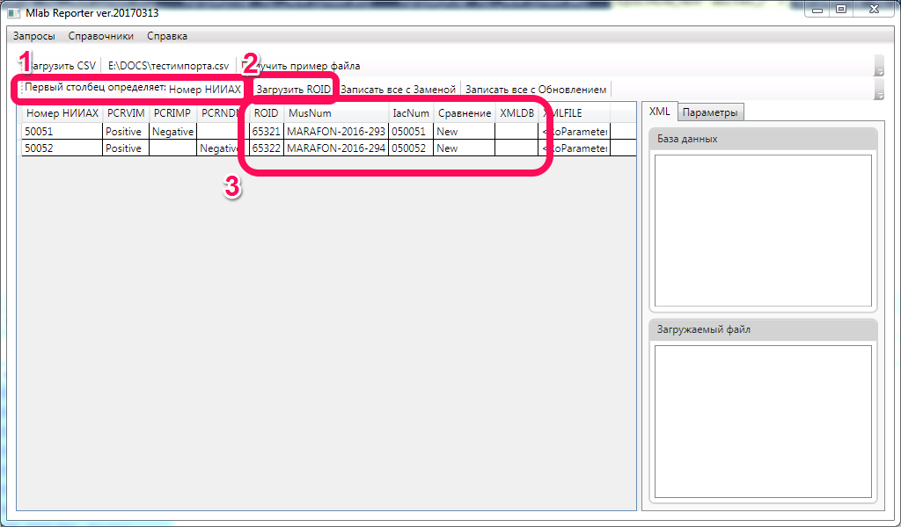
Обратите внимание, что обновились столбцы ROID, MusNum, IacNum, Сравнение. Они показывают какой именно штамм удалось найти в базе данных по первому столбцу нашего файла. Эти столбцы отображают следующее:
Примечание: Внимательно посмотрите, действительно ли программа нашла те штаммы, которые вы хотите обновить. После записи действие нельзя будет отменить!
В нашем случае все прошло хорошо, и мы нашли все штаммы из нашего файла. При этом для этих штаммов отсутствуют ранее записанные данные ПЦР-маркеров. Мы можем посмотреть, корректно ли программа распознала наши данные. Для этого выделим какую-либо строку таблицы и мы увидим распарсенные значения параметров, которые будут записаны в базу:
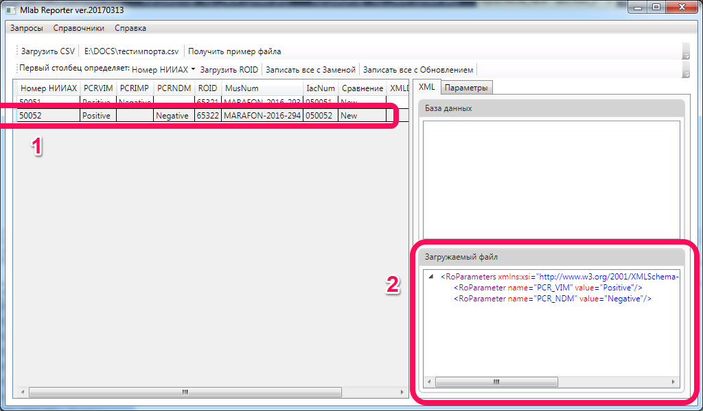
либо вот так
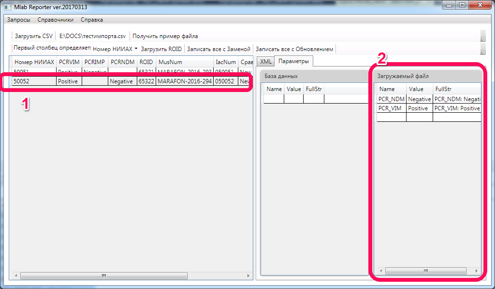
Если же в базе данных уже были данные ПЦР-маркеров, то картина будет следующая:
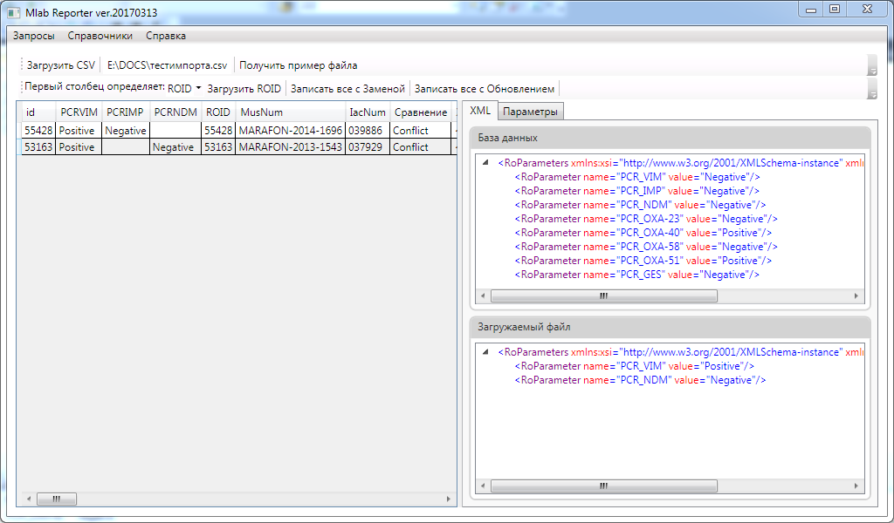
или такая:
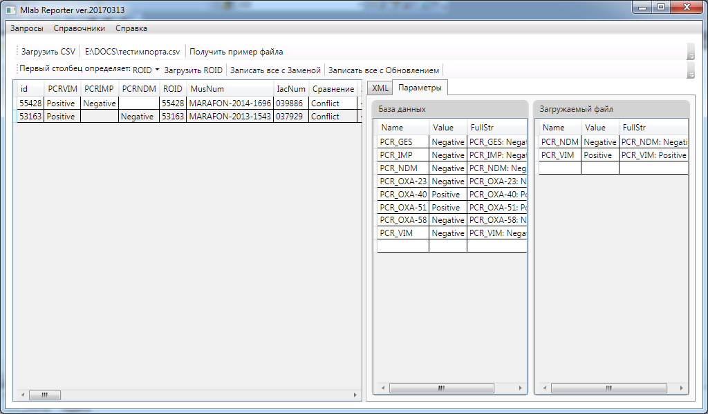
Если же после нажатия кнопки столбцы ROIDNum, MusNum, IacNum остались пустые, значит что программе не удалось найти соответствие в базе данных штаммам из файла. Выглядит это вот так:
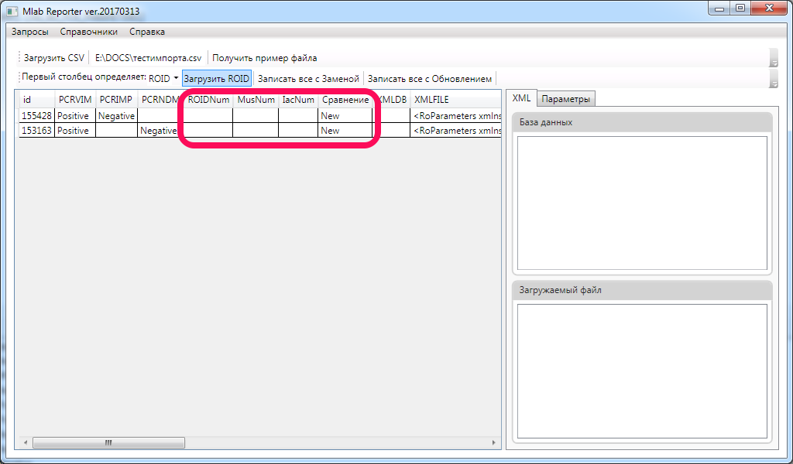
В этом случае:
Теперь мы подошли к самому ответственному моменту - записи данных в базу. Существует две возможности записи: с обновлением или с заменой.
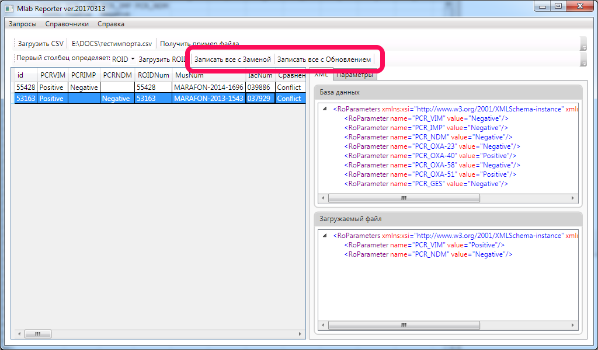
В чем их различие?
Здесь никаких рекомендаций быть не может, каждый решает сам, что именно ему нужно. Хочется только обратить внимание, что по нажатии кнопки будут записаны все строки файла. Если требуется часть файла записать с обновлением, а часть с заменой - разбейте исходный файл на два.
После того, как данные будут записано, в столбце Сравнение появится статус Written in db.
Проверить, все ли корректно записалось можно двумя способами:
-руководство-пользователя){kind=link}